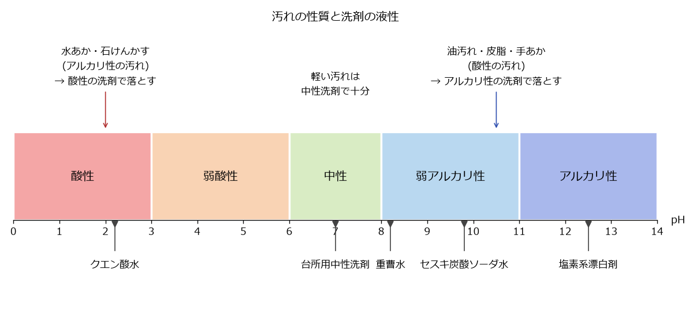

4. 掃除の基本
本章では、汚れの種類と性質、洗剤の選び方、掃除の順番、道具の使い方を説明する。汚れの性質に合った洗剤を選べば、力を入れなくても汚れが落ちる。
4.1. 汚れの種類と性質
家庭の汚れは、性質によって次のように分けられる。
汚れ |
性質 |
主な場所 |
|---|---|---|
油汚れ |
酸性 |
コンロ周り、換気扇、電子レンジの中。時間がたつと固まってべたつく。 |
皮脂汚れ・手あか |
酸性 |
ドアノブ、照明のスイッチ、床、浴室の壁、衣類の襟 |
アルカリ性 |
蛇口、鏡、シンク。水道水に含まれるミネラルが残って白く固まったもの。 |
|
アルカリ性 |
浴室の床や壁、洗面器。石けんと水道水のミネラルが結び付いたもの。 |
|
カビ |
生物 |
浴室のゴムパッキンや目地、窓のサッシ。湿気が多く、汚れが残っている場所に生える。 |
ほこり |
乾いた汚れ |
床、家具の上、家電の裏。綿ぼこりや髪の毛、砂など。 |
尿石 |
アルカリ性 |
便器の内側のふち。尿の成分が固まったもの。 |
4.2. 洗剤の液性
洗剤は、液性（酸性・中性・アルカリ性の度合い）によって、得意な汚れが異なる。液性は pH という数値で表し、pH 7 が中性、それより小さいと酸性、大きいとアルカリ性である。家庭用の洗剤は、法律（家庭用品品質表示法）に基づいて、液性を次の 5 つに区分して表示している。
液性 |
pH の範囲 |
主な製品の例 |
|---|---|---|
酸性 |
3.0 未満 |
トイレ用洗剤（酸性タイプ） |
弱酸性 |
3.0 以上 6.0 未満 |
一部の浴室用洗剤 |
中性 |
6.0 以上 8.0 以下 |
台所用中性洗剤、浴室用中性洗剤、住居用洗剤 |
弱アルカリ性 |
8.0 を超え 11.0 以下 |
一部の住居用洗剤、粉末の洗濯用洗剤 |
アルカリ性 |
11.0 を超える |
換気扇用・レンジ周り用の強力な洗剤、塩素系漂白剤 |
汚れを落とす基本は、汚れと反対の性質の洗剤を使うことである（図 4.1）。酸性の汚れ（油汚れ・皮脂汚れ）はアルカリ性の洗剤で、アルカリ性の汚れ（水あか・石けんかす）は酸性の洗剤で落としやすくなる。日常の軽い汚れは、素材を傷めにくい中性洗剤で十分である。


図 4.1 汚れの性質と洗剤の液性（pH の値はおおよその目安）
洗剤のほかに、次のような身近な素材も掃除に使える。いずれも洗浄力は市販の専用洗剤より穏やかである。
- 重曹（炭酸水素ナトリウム）
弱アルカリ性。粉のまま、または水に溶かして、軽い油汚れや鍋の焦げ付きに使う。粒子が細かく、クレンザーのように研磨剤としても使える。
- セスキ炭酸ソーダ
重曹よりアルカリ性が強く、水に溶けやすい。水に溶かしてスプレーにすると、皮脂汚れや手あかの拭き掃除に向く。
- クエン酸
酸性。水に溶かして、水あかや石けんかす、トイレのアンモニア臭に使う。
アルカリ性の洗剤や重曹・セスキ炭酸ソーダは、アルミや銅、無垢材、畳などを変色させることがある。酸性の洗剤やクエン酸は、大理石やセメント、鉄を傷めることがある。初めて使う場所では、目立たない所で試してから使う。
4.3. 「まぜるな危険」と安全な使い方
塩素系の洗剤・漂白剤と、酸性タイプの洗剤が混ざると、有毒な塩素ガスが発生する。塩素ガスを吸い込むと、のどや目を傷め、命に関わることもある。このため、該当する製品には「まぜるな危険」と大きく表示されている。
次の点を必ず守る。
塩素系の製品と酸性タイプの製品は、同時に使わない。続けて使う場合は、先に使った洗剤を水で十分に洗い流してから使う。
塩素系の製品と、クエン酸や酢を一緒に使わない。クエン酸や酢も酸性である。
塩素系の製品を使うときは、窓を開けるか換気扇を回して換気する。
ゴム手袋を着け、液が目に入らないよう注意する。必要に応じて眼鏡やマスクも着ける。
洗剤を別の容器に移し替えない。中身が分からなくなり、誤飲や誤った混合の原因になる。
洗剤が目に入ったときは、こすらずにすぐ流水で十分に洗い、医師の診察を受ける。誤って飲んだときや、気分が悪くなったときも医療機関に相談する。
4.4. 掃除の基本の順番
掃除は次の順番で行うと、二度手間にならない。
- 上から下へ
ほこりは上から下に落ちる。棚の上や照明を先に掃除し、床は最後に掃除する。
- 奥から手前へ
部屋の奥から出入り口に向かって掃除すると、掃除した所を踏まずに済む。
- 乾いた掃除から湿った掃除へ
先にほこりを取ってから水拭きをする。ほこりが残ったまま水拭きをすると、ほこりが泥のようになって広がる。
- 汚れの軽い所から重い所へ
同じ布やスポンジを使う場合は、きれいな所から汚れた所の順に進めると、汚れを広げにくい。
床掃除の場合、窓を開けて換気し、棚の上などのほこりを落としてから、掃除機またはフローリングワイパーで床のほこりを取り、最後に必要に応じて水拭きをする。掃除機を使う場合は、朝起きてすぐや帰宅直後など、ほこりが床に落ちて舞っていないときに行うと効率がよい。
4.5. 道具の使い方
- 掃除機
ヘッドをゆっくり動かすと、ごみをしっかり吸い取れる。速く動かすと吸い残しが出やすい。ごみがたまったら早めに捨て、フィルターも定期的に手入れする。
- フローリングワイパー
乾いたシートは床のほこりや髪の毛を取るのに、ぬれたシートは素足の皮脂汚れや食べこぼしを取るのに使う。
- スポンジ
硬い面は、傷が付いてもよい場所だけに使う。浴槽や樹脂製の洗面ボウルなど傷付きやすい素材には、柔らかい面を使う。
- マイクロファイバークロス
水でぬらして固く絞ると、洗剤を使わなくても軽い汚れが落ちる。乾いたまま使うと、鏡や蛇口を磨ける。
4.6. 汚れをためないこつ
汚れは、付いた直後なら水や湯で拭くだけで落ちることが多い。時間がたつと、油は固まり、水あかは層になり、カビは根を張って落ちにくくなる。次のような「ついで掃除」を習慣にすると、まとめて行う掃除が楽になる。
料理の後、コンロ周りが温かいうちに拭く。
入浴後、浴室の壁や床の水気を切り、換気する。
歯みがきの後、洗面ボウルをさっと洗う。
トイレを使ったついでに、便器のふちを拭く。